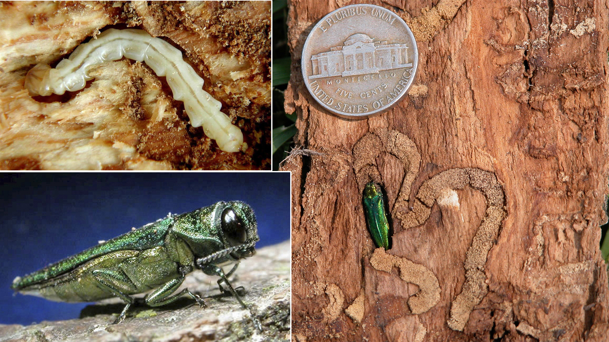

Ash-Bore

The Ash Bore insect makes a tree its home. When a tree is cut down tons of Ash lose their home and end up leading to death.
information about the Ash
Emerald ash borer is an exotic beetle that was discovered in southeastern Michigan near Detroit in the summer of 2002.
Facts about the Ash
- scientists have traced EAB destruction back to the early 1990s in Michigan.
- An EAB beetles lifespan ranges from 1-2 years in North America.
- The EAB beetle kills ash trees by destroying the water and nutrient conducting tissues under the tree’s bark.
- The Emerald Ash Borer is spread through the moving of firewood from its initial location.
- The Emerald Ash Borer is now recognized as the most harmful pest in North America.